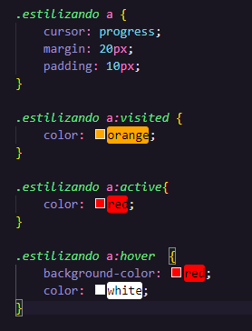

Os links acima pegaram esses estilos:

O "cursor: progress;" adiciona uma o circulo de carregamento ao lado do curso do mouse ou a ampuleta.
O "a:visited" é para indicar que um link já foi visitado e faz com que ele mude de cor, no caso, orange.
O "a:active" é para quando clicar em cima do link ele muda de cor, no caso, red.
O "a:hover" é para quando passar o mouse em cima do link ele muda a cor a sua volta.